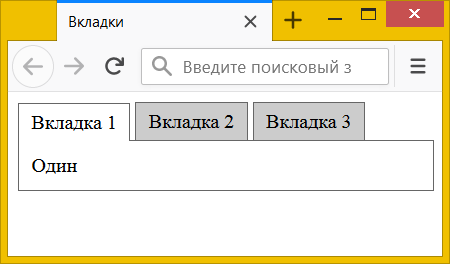

Вкладки на CSS
Вкладки представляют собой набор блоков, между которыми можно переключаться щелчком по «выступу» с заголовком блока (рис. 1).

Рис. 1. Вид вкладок
Для создания вкладок мы используем группу переключателей, поскольку они позволяют выбрать только один переключатель из группы. Все вкладки вставляем в <div> с классом tabs, а для каждой вкладки используем набор из <input>, <label> и <section>, которые вложены в <div> с классом tab (пример 1).
Пример 1. Код отдельной вкладки
<div class="tab">
<input type="radio" id="tab1" name="tab-group">
<label for="tab1" class="tab-title">Заголовок вкладки</label>
<section class="tab-content">
Содержимое вкладки
</section>
</div>Элемент <input> нужен для создания функционала вкладок, в стилях к нему позже добавим псевдокласс :checked. Элемент <label> используется для заголовка каждой вкладки, его надо связать с <input> с помощью атрибутов id и for. A <section> хранит содержимое вкладки.
В CSS сперва прячем исходные переключатели с помощью свойства display со значением none.
input[type="radio"] { display: none; }Чтобы вкладки располагались по горизонтали, добавим к классам tab и tab-title свойство display со значением inline-block.
.tab, .tab-title { display: inline-block; }Заголовок вкладок сделаем серого цвета с рамкой, активная вкладка будет белой. Стиль заголовка активной вкладки получаем за счёт комбинации селекторов :checked и tab-title. В стиле <label> смещаем на один пиксель вниз, чтобы заголовок и содержимое вкладки образовывали единое пространство без линии снизу. И добавляем свойство z-index для отображения заголовка поверх содержимого вкладки.
.tab :checked + .tab-title {
position: relative; /* Относительное позиционирование */
background: #fff; /* Цвет фона */
top: 1px; /* Сдвигаем вниз */
z-index: 1; /* Отображаем поверх содержимого */
}Содержимое каждой вкладки прячем опять же через display. Нам также требуется явно задать ширину блока как 100%, так он будет занимать всю доступную ширину. Чтобы значение padding не влияло на ширину блока, можно воспользоваться свойством box-sizing или вычислить ширину через функцию calc().
.tab-content {
padding: 10px; /* Поля вокруг текста */
width: 100%; /* Ширина */
box-sizing: border-box; /* Ширина не включает padding */
или
padding: 10px; /* Поля вокруг текста */
width: calc(100% - 20px); /* Ширина содержимого */
}Стиль содержимого активной вкладки задаём через довольно громоздкий селектор.
.tab :checked + .tab-title + .tab-content { display: block; }Впрочем, его можно заменить на более изящный и компактный с помощью братского селектора.
.tab :checked ~ .tab-content { display: block; }Окончательный код для создания вкладок с использованием псевдокласса :checked показан в примере 2.
Пример 2. Вкладки на CSS
<!DOCTYPE html>
<html>
<head>
<meta charset="utf-8">
<title>Вкладки</title>
<style>
.tabs {
position: relative; /* Относительное позиционирование */
}
.tab, .tab-title {
display: inline-block; /* Выстраиваем по горизонтали */
}
.tab input[type="radio"] { display: none; }
.tab-title {
background: #ccc; /* Цвет фона */
padding: 5px 10px; /* Поля вокруг текста */
border: 1px solid #666; /* Параметры рамки */
border-bottom: none; /* Снизу линию убираем */
}
.tab-content {
position: absolute; /* Абсолютное позиционирование */
border: 1px solid #666; /* Параметры рамки */
padding: 10px; /* Поля вокруг текста */
left: 0; /* Размещаем у левого края */
width: calc(100% - 20px); /* Ширина содержимого */
display: none; /* Прячем вкладку */
}
.tab :checked + .tab-title {
position: relative; /* Относительное позиционирование */
background: #fff; /* Цвет фона */
top: 1px; /* Сдвигаем вниз */
z-index: 1; /* Отображаем поверх содержимого */
}
.tab :checked ~ .tab-content {
display: block; /* Показываем активную вкладку */
}
</style>
</head>
<body>
<div class="tabs">
<div class="tab">
<input type="radio" id="tab1" name="tab-group" checked>
<label for="tab1" class="tab-title">Вкладка 1</label>
<section class="tab-content">Один</section>
</div>
<div class="tab">
<input type="radio" id="tab2" name="tab-group">
<label for="tab2" class="tab-title">Вкладка 2</label>
<section class="tab-content">Два</section>
</div>
<div class="tab">
<input type="radio" id="tab3" name="tab-group">
<label for="tab3" class="tab-title">Вкладка 3</label>
<section class="tab-content">Три</section>
</div>
</div>
</body>
</html>